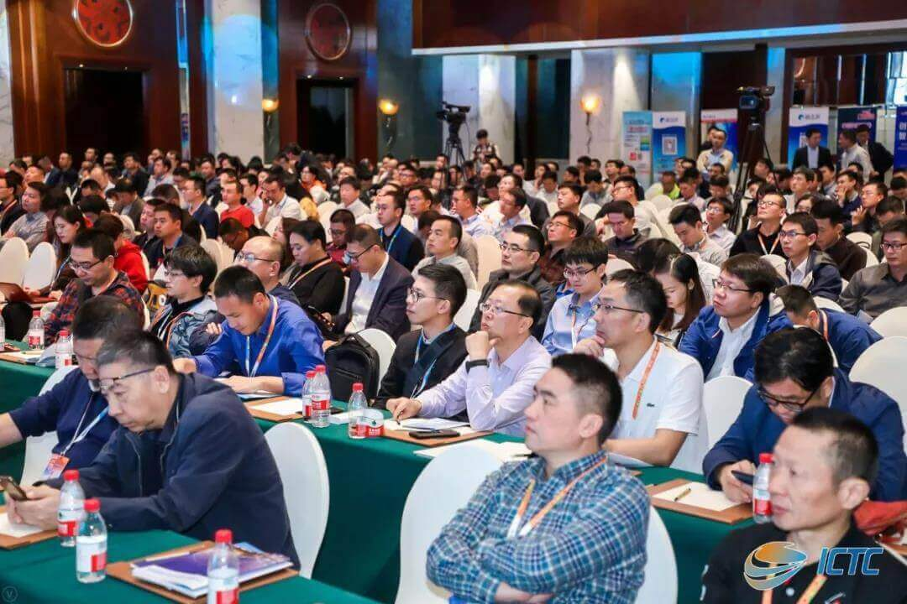

ICTC2019|ONAIR阳光云视“从技术中来，到运营中去”
2019年10月23日，第27届媒体融合技术研讨会(ICTC2019)在浙江杭州举办。今年会议在国家广播电视总局科技司全程指导下，将以切实增强推动广播电视技术的高质量发展为目标，密切结合总局的重点工作和行业发展的热点问题，围绕“融合引领发展 迎接智慧全媒体时代”这一主题，精心组织报告会和论坛，重点拟就媒体融合、广电5G、超高清、县级融媒体、广电宽带、智慧广电、集客业务等行业热点技术进行深入研讨。配合会议主题，还组织举办了新技术、新产品展示活动。
北京阳光云视科技有限公司受邀参展，并在媒体融合论坛中发表了主题演讲，与全国融媒体领域专家共同探讨融媒体发展之路。


随着5G技术的逐步落地，媒体融合发展和技术创新不断，而媒体融合的进阶之路也从1.0的新媒体突破，2.0的整合建设，向着3.0的深度融合、运营创新迈进，近期中国广电取得5G牌照，更是使传媒行业获得了用技术赋能媒体融合的重要契机，阳光云视持续秉持以技术赋能融媒体发展，不管是从平台的设计理念，还是产品的迭代升级方向，都体现了这一特点：
从技术中来，到运营中去
新场景1：移动采编
现如今移动采编早已不是一个新鲜词汇，但结合5G技术、AR、VR等先进设备，语音识别、智能写稿、智能直播/视频剪辑等先进技术，传统采编人员将升级为全媒体采编单元，即提高了单兵能力，也形成一支图文、音视频的多栖采编队伍，通过技术运营更能以省、市、县全覆盖的多维联动方式，形成移动采编新场景。
新场景2: 智能调度
守正创新，融媒体的发展不只是新闻传播的发展，更关系到当地民生、政务等相关服务的发展，形成广电科技创新新生态，5G时代中的融媒体中心，不但要顺应人工智能、云计算、大数据等新技术趋势，更要强化日常运营创新，探索跨区域、跨行业、跨平台资源整合的运营方式，甚至可以和区域物联网、车联网、移动互联网打通，成为真正的智能化调度平台。
新场景3：融合传播
融媒体的发展关键在于融为一体、合而为一，互联网的信息传播特点与新媒体的发展规律使得各级融媒体平台发展要以运营为发力点，现阶段既要在各大互联网平台及流量应用中获得传播效果，也要逐步使融媒体平台价值发挥到最大，通过技术运营+内容运营+用户运营的整体发展，实现融合传播新场景。